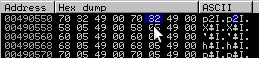
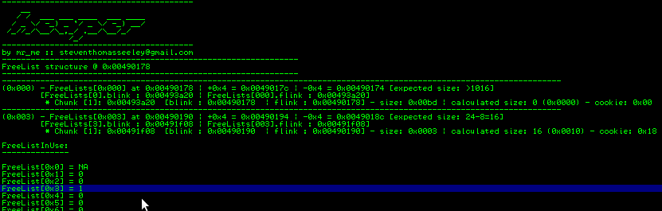

/*
FreeListInUse bitmap flip example
technique by Nicolas Wiseman
PoC example by Steven Seeley
Note: we have to play around with a few more allocations/frees than I wanted to
due to the lookaside. Np this is just an example..
*/
#include <stdio.h>
#include <windows.h>
int main(int argc,char *argv[])
{
char *a,*b,*c,*d,*e,*f,*g,*h,*i,*j,*k,*l,*m,*trigger;
char *x, *y, *w, *u, *z, *q, *o;
long *hHeap;
hHeap = HeapCreate(0x00040000,0,0);
a = HeapAlloc(hHeap,HEAP_ZERO_MEMORY,16);
b = HeapAlloc(hHeap,HEAP_ZERO_MEMORY,16);
c = HeapAlloc(hHeap,HEAP_ZERO_MEMORY,16);
d = HeapAlloc(hHeap,HEAP_ZERO_MEMORY,16);
e = HeapAlloc(hHeap,HEAP_ZERO_MEMORY,16);
f = HeapAlloc(hHeap,HEAP_ZERO_MEMORY,16); // forces onto freelist[0x3] because two busy chunks exist
g = HeapAlloc(hHeap,HEAP_ZERO_MEMORY,16); // around the chunk
// allocate for freelist[0x7b]
z = HeapAlloc(hHeap,HEAP_ZERO_MEMORY,976);
x = HeapAlloc(hHeap,HEAP_ZERO_MEMORY,976);
y = HeapAlloc(hHeap,HEAP_ZERO_MEMORY,976);
w = HeapAlloc(hHeap,HEAP_ZERO_MEMORY,976);
q = HeapAlloc(hHeap,HEAP_ZERO_MEMORY,976);
u = HeapAlloc(hHeap,HEAP_ZERO_MEMORY,976); // forces onto freelist[0x7b] because two busy chunks exist
o = HeapAlloc(hHeap,HEAP_ZERO_MEMORY,976); // around the chunk
// fill lookaside[0x3]
HeapFree(hHeap, 0, a);
HeapFree(hHeap, 0, b);
HeapFree(hHeap, 0, c);
HeapFree(hHeap, 0, d);
// insert into freelist[0x3]
HeapFree(hHeap, 0, f);
printf("(+) Chunk e: 0x%08x\n",e);
printf("(+) Fill chunk e (using 16 bytes), overflowing into chunk f (0x%08x) by 1 byte:\n",e);
printf("(+) Overflow with size 0x7c (AAAAAAAAAAAAAAAA|)...\n");
gets(e);
// remove the chunks on the lookaside
h = HeapAlloc(hHeap,HEAP_ZERO_MEMORY,16);
i = HeapAlloc(hHeap,HEAP_ZERO_MEMORY,16);
j = HeapAlloc(hHeap,HEAP_ZERO_MEMORY,16);
k = HeapAlloc(hHeap,HEAP_ZERO_MEMORY,16);
// this is where we flip the bitmap. FreelistInUse [0x7c] = 1
l = HeapAlloc(hHeap,HEAP_ZERO_MEMORY,16);
// fill lookaside[0x7b]
HeapFree(hHeap, 0, z);
HeapFree(hHeap, 0, x);
HeapFree(hHeap, 0, y);
HeapFree(hHeap, 0, w);
// insert into freelist[0x7b]
HeapFree(hHeap, 0, u);
// return the chunk that points to itself in freelist[0x7c], so we can overwrite management structures...
m = HeapAlloc(hHeap,HEAP_ZERO_MEMORY,984);
printf("(+) Fill chunk m and destroy the management structure:\n");
gets(m);
// force the heap to be extended triggering RtlCommitRoutine
trigger = HeapAlloc(hHeap,HEAP_ZERO_MEMORY,4096);
exit(0);
}
Heap Overflows For Humans 103
Hi guys! Once again I'm back and here to discuss yet another important technique for heap exploitation that I do not want to see get buried in the sands of time. Lucky for me I have some time off over Christmas/New years so I can cover more of this topic. Lets review what we have covered so far just in-case you missed some if it:
Heap Overflows For Humans 101 [basics of heap overflows under NT 5.1 (Windows XP SP1)]: > The basic 'unlink()' exploitation and function pointer overwrites > Abusing the Unhandled Exception Filter > Abusing Vectored Exception Handling Heap Overflows For Humans 102: > We covered more on the heap data structures and algorithms for allocation and freeing including RtlAllocateHeap() RtlFreeHeap(), coalescing, block splitting, and structures like heaps, segments, the Lookaside List, the FreeList, chunk headers, etc > Safe Unlinking > Heap header cookies > Exploitation technique: overwriting a chunk on the look aside aka 'ListHead overwrite' Heap Overflows For Humans 102.5: > Introduced another popular technique known as FreeList[0] insert attack > Introduced a new heap plugin for Immunity Debugger called !heaper Heap Overflows For Humans 103 (this tutorial): > Covered some theory regarding the FreeListInUse bitmap > Introduced Nicolas Wisemans 'FreeListInUse bitmap flip attack' > Explain how I fail with RtlCommitRoutine :/ and provide a possible solution > Made some modifications to heaper that allow further analysis of the FreeListInUse bitmap, created a Github repository for easy code management
Lets get right into it! grab a 0xc0ff3333 and be ready to think!
The FreeListInUse
The FreeListInUse is a structure of size 16 bytes (4 longs) found at offset 0x0158 of the heap base and consists of a number of bytes that build a table that identifies which FreeList[n] entries contain free chunks. The purpose of the FreeListInUse bitmask is to speed up RtlAllocateHeap() when performing allocations from the FreeList. During an allocation, the heap manager will scan the bitmap from the size allocation by adding 8 and / by 8. For example, say we are allocating a size of 664 bytes, it would + 8 (674) and / 8 = 84 (0x54) so the heap manager would start scanning at FreeList[54] and continue downwards. This is purely an optimization as so to increase speed of the heap manager.
Lets take a look at what this bitmap can look like:
Ok, so 4 longs each of 32 bits representing a total of 128 (precisely the size of the FreeList). But looking at it like that is tricky, lets take a closer look:

If you are allocating from a FreeList[n] entry and it is the last chunk, it will unset the bit. Likewise if you are using HeapFree() and it is being freed to the FreeList (assuming the lookaside is full) it will set the bit. In ntdll!RtlAllocateHeap, the code will XOR the current bit with 1 to produce the new bit value:
; FreeListInUse modification:
7C910CEE . 0FB70E MOVZX ECX,WORD PTR DS:[ESI] ; ecx = chunk->size
7C910CF1 . 8BC1 MOV EAX,ECX ; eax = ecx
7C910CF3 . C1E8 03 SHR EAX,3 ; ListOffset = size / 8
7C910CF6 . 8985 28FFFFFF MOV DWORD PTR SS:[EBP-D8],EAX
7C910CFC . 83E1 07 AND ECX,7 ; entryByte = size & 7, ecx = entryByte
7C910CFF . 33D2 XOR EDX,EDX ; edx = NULL
7C910D01 . 42 INC EDX ; edx = 0x01
7C910D02 . D3E2 SHL EDX,CL ; byteToSet = 1 << entryByte
7C910D04 . 8995 04FFFFFF MOV DWORD PTR SS:[EBP-FC],EDX
7C910D0A . 8D8418 5801000>LEA EAX,DWORD PTR DS:[EAX+EBX+158] ; eax = 0x004907A6 FreeListInUse Offset
7C910D11 . 33C9 XOR ECX,ECX ; ecx = NULL
7C910D13 . 8A08 MOV CL,BYTE PTR DS:[EAX] ; current_val = FreeListInUse[
; FreeListInUseOffset ]
7C910D15 . 33CA XOR ECX,EDX ; current_val = xor(current_val,byteToSet)
7C910D17 . 8808 MOV BYTE PTR DS:[EAX],CL ; FreeListInUse[ FreeListInUseOffset ] =
; current_val
The important point to make with this is that the 'byteToSet' will always be 1. Lets run some xor tests.
>>> current_val = 0 >>> byteToSet = 1 >>> current_val^byteToSet 1 >>> current_val = 1 >>> current_val^byteToSet 0
So we can see that the value of the FreeListInUse entry is based on what the last value was. Stop and think about it for a second before proceeding, it is this simple fact, along with the way XOR works that we are exploiting. What if we manage to have a situation where we are able to control a single bit of the FreeListInUse?
Exploiting FreeListInUse (bitmap flip attack)
Before we begin to demonstrate ways to flip bits on the FreeListInUse bitmap, lets demonstrate the outcomes of such a situation. Lets say you have 0 free chunks available to the heap manager in the FreeList[0x66] entry. This is what we would be looking at:
FreeList[0x066] 0x00a804a8 -> [ flink: 0x00a804a8 | blink: 0x00a804a8 ]
Essentially, the FreeListInUse for this entry would correspond to 0. Now lets assume for a second that the FreeListInUse entry was actually set to 1. Had we then requested an allocation for that particular size (0x66*0x8/8) or less, RtlAllocateHeap() would scan the FreeListInUse and search for the corresponding entry that is set that could fulfil that request (assuming the lookaside is empty).
So the request goes ahead and would return the value 0x00a804a8 as a 'valid' chunk. Now because the FreeList[n] will point to the list entry itself, if there are no chunks, it would return a value that has an offset close to certain management structure values for that heap.
At this point it would be straight forward to overwrite from 0x00a804a8 down say 216 bytes and overwrite the RtlCommitRoutine pointer stored at offset 0x57c. However when testing this attack technique and reversing RtlAllocateHeap(), I noticed that we will need one condition after we have flipped the FreeListInUse entry.
The chunk we are allocating, must be the last chunk in the list otherwise the RtlAllocateHeap() will try to walk the entries and cause an access violation. Lets look at the code:
The instruction to look at is the TEST CL,0x10. We know that 0x10 means that it is the last chunk in the entry. So when we are looking at a FreeList[n] entry, the chunks address will point to the flink/blink and not to the header itself. So to inspect if the chunk, to determine if we will fail the above check, we have to take the chunk address and - 0x8 and then + 0x5 for the offset to the chunk flag in its header. This is best shown visually:
And if we were to dump the chunk at 0x00a804a8 then the header would be at 0x00a804a0 and our chunk flag would be at 0x00a804a5 (where the cursor is):
If we modify that to a known value (0x10 instead of 0x04) and it executes the TEST against the constant 0x10, it will fail the check and not take the jump (of course a CMP would have been a better option). The pseudo code would be something like this:
if (chunk->flag & 0x10) <= 0:
walk_freelist_entry()
So lets modify it:
Whatever hexadecimal character we use, it must contain a binary value set at position 0x5 of an 8bit representation, for it to bypass the check (eg: 00010000). Of course this works out to be exactly 256/2 so 128 possible bytes could be used to bypass this check of the LAST chunk. Here are the values:
0x10-0x1f 0x30-0x3f 0x50-0x5f 0x70-0x7f 0x90-0x9f 0xb0-0xbf 0xd0-0xdf 0xf0-0xff
As mentioned previously, the Freelist starts at 0x0178 and ends at 0x0570. Therefore the possible values are 0x01-0x05 which will never work for allocating a chunk that is the freelist[n] itself. One way too succeed is too have a free chunk in the FreeList[n] entry BEFORE the FreeList[n] entry that you are allocating from. The address of this chunk must contain a byte value listed above in the 3rd position from the left. For example: An address like this - 0xXXXXYYXX where YY is equal to any of the above listed bytes. Again, lets visually picture this:
We can see the previous entry has a byte of 0x32 instead of 0x4. Lets look at this in the dump window:

Does 0x32 bypass the check? Yes because the value will return False and not take the jump.
>>> print (0x32 & 0x10) <= 0 False
So the jump will not be taken and the unlinking will begin assuming we perform a HeapAlloc(984). At this point, we should get returned value of 0x00490558 in EAX.
Flipping the bit
Before we can even get to the point where we are allocating a FreeList[n] fake chunk, we need to be able to abuse the bitmask some how. So far, I am aware of 3 different techniques:
Trigger a heap overflow and modify the size only of a FreeList[n] chunk (must be the only chunk in that FreeList[n] entry). You modify it with a
size that you want to flip at. So when the free overflow chunk is allocated, it will switch the FreeList entry corresponding to the modified size.
Trigger a heap overflow and modify the size, flink/blink and set the chunk flag to 0x10 of a FreeList[n] chunk (doesnt matter if the FreeList[n]
entry has multiple chunks). You made the flink and blink the same value and set the flag, so the algorithm will think they are the last chunk on a
freelist entry. When you allocate that chunk, the FreeListInUse entry corresponding to the modified size will be change into 1.
You gain control of a primitive via a 'inc( ptr )'. You modify the FreeListInUse for an empty entry. Allocate a chunk of the size of the entry - 8.
Who says you even need a heap overflow? More on this below.During testing and analysis however, I understood the importance of being able to simulate a FreeListInUse bitflip. I have included a function in !heaper that allows you to be able to do this.
Lets display the FreeListInUse for heap 0x00490000:
We will modify the FreeList[20] entry for the FreeListInUse:

Now all we would need to do is ensure a free chunk exists in FreeList[0x1c] and that it has a compatible value for its chunk flag (see above).
On the 30th of May 2007, Nicolas Waisman posted a riddle on DailyDaves mailing list that asks security analysts how they might exploit a inc [r32] instruction assuming they control the primitive.
Lets have a fun riddle to cheer up the spirit (Mate at 11pm, its all night insomnia).
The riddle: Let said you are trying to exploit a remote service on an old Windows 2000 (whatever SP you want) and the primitive is the following inc [edi] // you control edi.
What would be the best option for edi?
Nico
If we were able to gain control of a primitive and were able to increment a pointer at any location multiple times we could set up an attack like so: Assuming the following (assumptions are bad I know):
- The heapbase is 0x00490000
- We had no entries in FreeList[n] besides FreeList[0]
- EDX is a controlled value
- Our instruction that we are at is: inc byte [edx]
- We can actually perform the increment multiple times (you could, most likely perform other attacks if this was the case. But this is just a contrived example)
1) We set EDX to 0x0049015c and modify the FreeListInUse.
Lets view the FreeListInUse:
2) Now we would need to ensure that the chunk at FreeList[0x20] that points to the entry itself (a fake chunk) has it's fake header flag set correctly. Lets take a look at its current value:
So this is simple, lets just increment it to 0x10 using our controlled primitive:
Now when an allocation comes in for size 0x20, the heap manager will happily return the FreeList[20] entry itself! (0x00490278).
- We didn't even need a heap overflow! : )
- We didn't need any free chunks in FreeList[n] at all!
- We needed to control a primitive for a inc byte [r32] instruction.
- We needed to control 2 allocations with a specific size. One for pulling the freelist[n] entry back as a valid chunk and one for the forcing the allocator to commit more memory, triggering the RtlCommitRoutine() function pointer.
Exploitation via RtlCommitRoutine
Exploitation via the RtlCommitRoutine proved for me (now at least) to be not successful. This is due to the smashing of many pointers in the heap structure that seemed to get referenced (read/writes) in memory before looking up the RtlCommitRoutine pointer at offset 0x57c. Such pointers include the Lock Variable at offset 0x578.
None-the-less here is the following code I am trying to trigger:
7C918B26 . 8B88 7C050000 MOV ECX,DWORD PTR DS:[EAX+57C] 7C918B2C . 85C9 TEST ECX,ECX 7C918B2E . 0F85 9F210300 JNZ ntdll.7C94ACD3 ;jump taken if ecx != 0 7C94ACD3 > 57 PUSH EDI 7C94ACD4 . 8D55 0C LEA EDX,DWORD PTR SS:[EBP+C] 7C94ACD7 . 52 PUSH EDX 7C94ACD8 . 50 PUSH EAX 7C94ACD9 . FFD1 CALL ECX <- code execution
However, if you had a generic write4 or could overwrite the flink of a lookaside list chunk and return it, you could overwrite the pointer itself. heapbase+0x57c->heapbase+0x608->RtlCommitRoutime. Assuming the heapbase is 0x0049 you would simply set the flink to 0x00490608 and write arbitray code at that location.
How did I fail?
To begin with we need to pass two checks starting at 0x7C90100B.
We can pass the checks by using a pointer to 0xffffffff00000000 in the lock variable offset in the heap structure (we can set this from the heap overflow). Then there is a check to see if there are no free chunks in FreeList[0].

Next we move into more code that checks offsets 0x668 (my guess is that it is referencing the FrontEndHeapType) and 0x654 for particular values. However I'm suspicious that these offsets are wrong due to EAX's value possibly being wrong (0x00490640).
Eventually if we pass that, we call sub_7C918AE3.
In sub_7C918AE3, we can see a few more checks at potentially wrong offsets into the heap structure:
Then, we land in code that should execute our 'shellcode':
Of course this is just one code path and I have not done analysis to determine other code paths however a quick glance reveals just two calls to the function that should execute our modified pointer and both code paths will originally start from RtlAllocateHeap.
A possible solution
Considering the many ways to try and overcome these hurdles I thought of a possible solution: We could just allocate/fill the buffer right up until we hit the RtlCommitRoutine pointer and go no further.
Whilst this will still smash several pointers, it does provide hope because theoretically we would only need to ensure that FreeList[0] is empty and replace the lock variable that we smashed along with the pointer to itself at heapbase+0x570 -> heapbase+0x570. Remember, the heapbase may not necessarily contain null bytes in a real example.
If we inspect the FreeList a little further we will notice that at a certain size, we can make an allocation that will smash the rest of the FreeList and only JUST overwrite the pointers.
Heap dump 0x00490000, item 75 Address=0x00490380 Chunks=[041] 0x00490380 -> [ 0x00490380 | 0x00490380 ]
For example the calculated size for this entry is 0x41 * 8 - 8 = 0x200 or 512 bytes maxiumum size for allocation: 512
Now the distance between 0x0049057c (RtlCommitRoutine pointer) and 0x00490380 (FreeList[41] chunk addr) is 508 bytes yet if we allocate from FreeList[41] we can fill the buffer up to 512 bytes so essentially we would only JUST allocate and write over the pointer at offset 0x57c of the heap base :-)
Of course we would need to repair the pointer at 0x578 and the pointer at 0x570, but it certainly looks like a viable option.
Update: Turns out the theory actually works ! You do have to ensure that the fake chunk header has the right value for the chunk flag and current size. If you have the ability to create arbitrary allocations and free them, then you can keep placing chunks into FreeList[40] until you get one that fits your requirements (free and pray?).
Bingo:
The attack by example
Here is my contrived example of FreeListInUse.c, you can compile it and follow along! Download the code and compile it with your favourite compiler. I just use Dev c++ Note: You may not get this working (try to understand why).
Start by opening the binary in immunity debugger and setting a breakpoint on 0x004016C4 and 0x00401612 (both calls to HeapAlloc) and run '!hidedebug ZwQueryInformationProcess'.
When analysing the FreeListInUse and the FreeList[n] we can see that the entry for 0x3 is set with free chunks. Take note of the size value x010.

We are going to overwrite that chunk's size (one byte overwrite) and then allocate from it. This will flip the corresponding size FreeListInUse entry with that of the value that we overwrote with.
Enter 16 ascii bytes followed by a "|". Example: AAAAAAAAAAAAAAA|. We are going to overwrite the size value with "\x7c" and press enter. You should hit your first breakpoint at 0x00401612.
Now lets inspect the chunks again. Note that at this stage the FreeListInUse entry for 0x7c is still 0 but we have overwritten the size value in chunk located at FreeList[0x3]:
Pressing f8, we step over the HeapAlloc() and view the FreeList and FreeListInUse table and we notice that the FreeListInUse entry for 0x3 is set and yet no chunks exist for it:
Our goal was to flip the bit for 0x7c, lets see if that has happned:
Now at our second break point, the code will try and allocate from entry 0x7c. But this will fail unless we free a chunk just before the 0x7c entry. Run the application now and you will see a chunk Freed into 0x7b after hitting your breakpoint at 0x004016c4. You can bet its corresponding FreeListInUse is set as well.
Now press f8 and step over the function call. You should see the EAX value set to 0x00490558 (FreeList[0x7c] itself!).
All there is left to do is overwrite the RtlCommitRoutine located at offset 0x57c. 0x57c-0x558 = 36 bytes + 4 bytes to control the pointer. Note that as soon as you do the allocation, you destroy all the pointers from offset 0x558:
But lets just overwrite the structure with our gets() anyway using "\x41" * 36 + "\x44" * 4 setting the pointer to be all D's:
At this point, you are supposed to trigger a heap extension (commit more memory from the heap segment). This is easily done by triggering a HeapAlloc() with a size that is greater than any chunk in FreeList[0]. You, of course, cannot allocate any size chunk from the FreeList[n] after 0x7c as these no longer exists. I have not provided all the answers in this walk through because I want readers to think on their feet and understand why it will not work exactly with the code I presented above. Hint: look at the size (I mentioned it as a possible solution).
Conclusion
Whilst the FreeListInUse bitmap flip attack is a amazing technique, it does present many hurdles for the attacker. No doubt in the right circumstance, it would be a perfect way to attack the heap allocator and overwrite management structures. The real hurdle is ensuring that the fake header contains the correct size and flag value. Although the attack is tricky to execute, it provides a little more than other application specific heap attacks as you don't actually need a heap overflow for this attack to work. A big thanks goes to Nicolas Waisman for discovering this technique and fine tuning my understanding of it. Also a big shout out and thanks to Brett Moore for his excellent research and detail in 'Heaps about Heaps'. Last but not least you can download an updated and managed version of !heaper as I go through and make the tutorials I will update the code.
References:
- Abusing the bitmask - here
- Heaps about Heaps - here